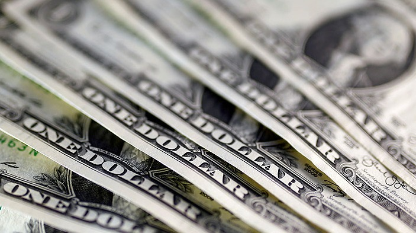
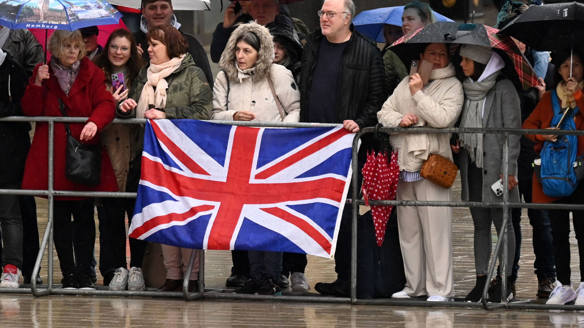

Internacional | Dólar cierra al alza tras cuatro bajas consecutivas y termina la semana al borde de los $795Con todo, la divisa registró un desplome semanal de $18,7.Ricardo Bustamante, jefe de estudios trading de Capitaria, dijo que "el billete verde repunta desde los mínimos del día debido a que los mercados dudan si el dato conoció será suficiente para que la Reserva Federal (Fed) finalice su proceso de alzas de tasas, especialmente si consideramos que la probabilidad de un incremento de 25 puntos base en la próxima reunión y la de mantener las tasas en el nivel actual son prácticamente de un 50% para cada alternativa, sin mayores variaciones en los últimos días". |
Nacional | Los Pincheira: la picada de los completos y as gigantes de Ñuñoa
Los Pincheira es un local legendario. Te hablamos de la picada para comer al paso que abrieron en septiembre de 2002 en la calle Jorge Monckeberg 756, a dos cuadras de Av. Grecia en Ñuñoa, los hermanos Víctor y Genaro Pincheira. Un puesto ubicado en un pasaje interior, donde puedes encontrar completos y as, esa maravilla típica chilena, a la que se le cambia la vienesa por una buena cantidad de churrasco hecha a la plancha y en dos tamaños, normal y gigante. De hecho, ni siquiera hay mesas, es al paso, a lo sumo te encontrarás con bancas para poder sentarte a disfrutar de tu sanguchito, que puedes pedir con papas fritas (desde $ 3.800), cortadas a mano, bien caseras. |
Internacional | Nuevo socio para Chile: Reino Unido entra al TPP11 y concreta su mayor acuerdo comercial tras BrexitChile tiene un nuevo socio: Reino Unido, y es que el país europeo se convertirá en la nación número 12 en ingresar al Tratado Integral y Progresivo de Asociación Transpacífico, más conocido en territorio nacional como TPP11. |
Periodico El Faro